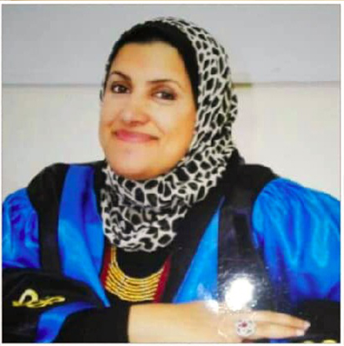

Aboukir Higher Institutes

About the institute
The Higher Institute for Tourism, Hotels and Antiquities Restoration was established by Ministerial Decree No. 1435 of 2000 and by Decision No. 618 of 2001 of the Higher Council of Universities. (46) In the history of 28/2/2012, the degree of Bachelor of Tourism Guidance awarded by the Institute is equivalent to the degree of Bachelor of Tourism Extension awarded by Egyptian universities and Decree No. (45) In the history of 3/3/2019, the B.A. degree is awarded by the Institute in the following disciplines: (Tourism Studies - Hotel Studies) subject to the Universities Regulation Act No. 49 of 1972 and its implementing regulations from the Colleges of Tourism and Hotels
Departments of the Institute
The Institute awards a bachelor's degree in tourism and hotels in the following disciplines and divisions.
Tourism Extension Department:
It aims to produce students familiar with the various knowledge associated with Egypt's history, effects and civilization throughout the ages, as well as with the basic tourism knowledge that allows them to work in the field of extension and tourism.
Hospitality Management Departments:
One of the specialties of tourism and hotel management focuses on managing hospitality operations with a wide range of activities and areas in the service sector, including hotels, air and sea hospitality, and includes specialties (hotel management, restaurant management, culinary arts management, air and maritime hospitality services - customer services).
Tourism Studies Department:
The aim is to graduate students who are familiar with the knowledge and skills required for the local and regional tourist labour market and include disciplines (tourism business management, airline management, navigation company management, special events management, sports event management).
Dean's word
Boys of Male and Female Students, Institute Family of Masters Faculty and Administrators
"Read" is the word that marked a tremendous shift in science and knowledge for humanity as a whole, by which knowledge was transferred, science was codified, civilizations were built, and we live in a new world governed by science and knowledge. A new world of educated, trained and effective human resources.
Through the Institute's website, you can read and listen to my dear students from faculty, and you can learn about the school plan, our main and specific departments, the school schedules, the examination schedules, the outcome of each semester, student activities, the activities of the training unit, the graduates, all the educational process and academic decisions...
Since in Egypt we have great youth energy, the strength of our society from the strength of our youth to teach and train it in the mechanisms and fundamentals of the times depends very much on the extent to which we are able to upgrade this young human power and provide them with the opportunity for effective education.The outstanding training that qualifies them for contemporary working life depends very much on how much we can increase his self-confidence and give him hope for the future.
We are therefore keen on the continuous development of curricula, various learning methods, scientific and practical activities in tourism, hotels and antiquities, making Abu Qir a highly qualified graduate of the labour market in Egypt and abroad.
Thus, the Institute's mission was to sow the seeds for the upgrading of the educational process and the development of skills, hoping to see them grow and flourish.


Quality Assurance Unit
About the unit
The Quality Assurance Unit was established in the Board of Directors session that was held on Saturday, March 28, 2015. The Quality Assurance Unit succeeded in adopting the academic reference standards in April of 2017 and the academic reference standards contain four basic axes upon which the student is graduated, namely:
Dr ./D. Wael Abdel Basset, faculty member of the Institute, was appointed Director of the Unit and assigned to contact the National Authority for Quality Assurance of Education and Accreditation in Cairo to complete accreditation procedures.
Vision
Upgrading the status of the Higher Institute for Tourists and Hotels, restoring monuments at the national and regional levels, contributing to overall quality and high performance, and maintaining continuous improvement in the output of the educational process and community service.
the message
The Quality Assurance Unit seeks to disseminate a culture of quality and to monitor and evaluate the performance of all components of the educational system and service activities provided by the Institute, in the light of the standards of the National Authority for Quality Assurance of Education and Accreditation.
Committees for implementing and following up the activities of the Quality Assurance Unit:
Certifications and accreditation
The duration of the study is four years. Decisions of the Higher Council of Universities include the granting of a bachelor's degree to graduates of the Institute (Tourist Extension, Tourism Studies and Hotel Studies). A certificate approved by the Ministry of Higher Education and the Decision on Equivalence allows graduates of the Institute to enrol in specialized trade unions, register graduate studies, master's studies, doctorate at Egyptian and foreign universities and apply to the military colleges of specialized officers.
.jpg)

Conditions for admission to the institute
Tourism and Hospitality Department
Training and Graduate Unit
Establishment of the Training and Graduate Unit of the Institute, which is part of the permanent care of the Abu Qir Higher Institutes - Higher Institute of Tourism and Hotels and Restoration of Babi Qir Monuments. The pursuit of graduates and students through their professional performance is a true measure and reflection of the Institute's scientific and practical standing. The Institute explores the impact of this by holding conferences, seminars and events that provide the necessary information for students and graduates.